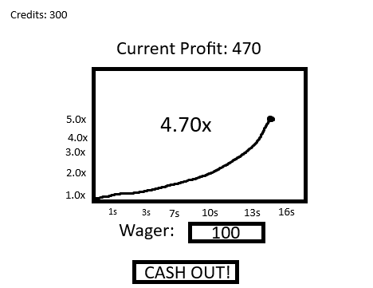
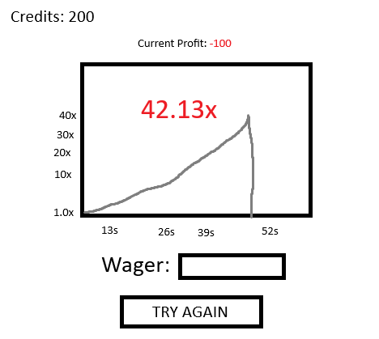

Crash!
DocumentationI. High Concept
One-liner (or up to 3 sentences) synopsis that pitches and summarizes your game.
II. Genre
Identify the gameplay genre(s) the game belongs to. This may also be mentioned in the High Concept section above.
III. Platform
Either desktop only, mobile only, "mobile-friendly", tablet, phone, universal.
IV. Story
Some games are purely abstract and have no story or theme (ex. Tetris).
But most games at least have a premise to define the action (ex. Your avatar is running from ghosts in a maze).
For your proposed game, discuss the theme (big ideas - if applicable), mood (excitement, fear, ?), narrative (how the player progresses through the game), and premise of the game (what drives the plot).
Also discuss player motivation. Give a short summary of what the player is trying to accomplish in the game. Some of this will be recycled from the High Concept section above.
V. Esthetics
Graphics style - abstract, cartoonish, photo-realistic?.
Sound - probably pretty simple - 8-bit, ambient, techno, looped, procedural?
Discuss the types of sound your game has: scoring, effect, UI, background, zone (varies by player location)?
VI. Gameplay
Mechanics
What specific choices can the player make and what can they do?
Control
Teaching the game/New user experience aka "Onboarding"
How is the player taught how to play the game? Is this integrated into the gameplay, are there separate instructional scenes, a tutorial, or some combination?
Player learning
Explain some of what the player needs to learn to beat the game. Be specific and cite actual powerups, combos, and strategies. Here we are talking about depth - which is simply (according to Extra Credits) "the number of emergent experientially different possibilities (or meaningful choices) that come out of one ruleset."
VII. Screenshots
Have at least 2 mockup screens of the game. They can be hand drawn and scanned, Photoshop mockups, or scanned doodles - use <img> tags. You can either display the images in this section, or somewhere else on the page.
 VIII. Other
IX. About the developer(s)
Your name/major/minor/year your, skill set and interests (ex. programming, game physics, graphic design, Maya, Photoshop, Illustrator, music, game sound, ...).